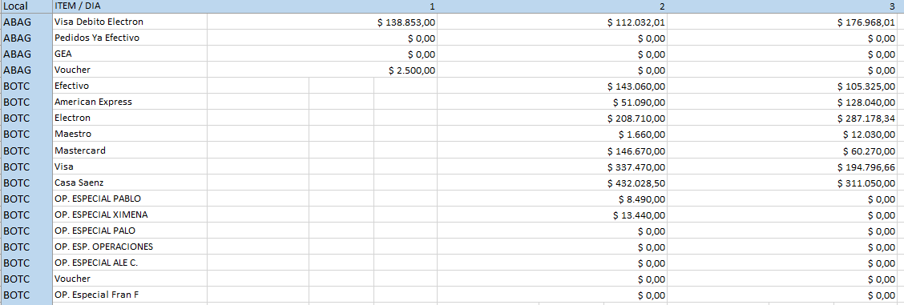

INSTRUCCIONES
- Cargar archivo en boton "Seleccionar Archivo". A continuacion se descargara automaticamente en el navegador el archivo procesado
- Debe agregarse al Excel original una primer columna con el codigo de cada local.
- Eliminar la columna final de Totales, ya que sino sera considerada como un valor mas a procesar.
- Alinear fechas cuando se arma el reporte base
- Solo debe haber una linea de encabezado con las fechas en la fila 1. El resto de los datos deben ser valores
